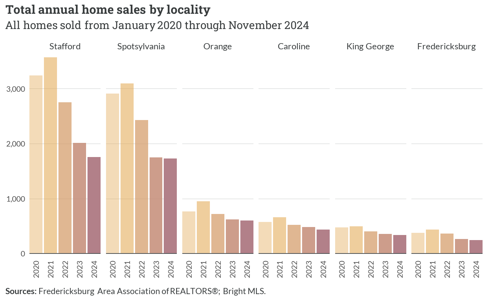
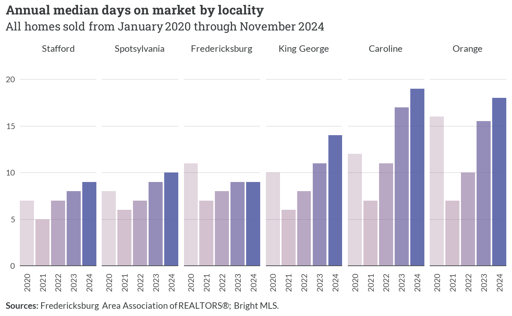

5 Homeownership market
5.1 Existing supply
There are slightly more than 111,200 households across the region who own their homes. Two-thirds (66%) have a single primary mortgage, and another 8% have an additional second mortgage and/or home equity loan. Just over 25% do not have a mortgage; nearly all of these homeowners have no debt at all.
Most homes in the existing supply are single family units with three to four bedrooms, units that could easily accommodate households with upwards of four people and more. Nearly 16,000 units in the region have five bedrooms or more, and fewer than 10,000 homes in the region are sized for families of two people or fewer.
The housing stock in the region is predominantly composed of single-family detached homes, which account for about 88% (97,661) of all owner-occupied units. Single-family attached homes represent the second most common structure type with 9,309 units. The remaining housing types — including 2-4 unit buildings, larger multifamily structures, manufactured homes, and other configurations — collectively comprise less than 4% of owner-occupied housing stock.
Home values in the region show a clear concentration in the middle price ranges, with the $300,000-$499,999 bracket containing the largest share of owner-occupied homes. This price segment shows roughly equal distribution between mortgaged and non-mortgaged properties. Higher-value properties ($750,000 and above) represent a relatively small portion of the market, while homes valued under $200,000 account for approximately 15% of the owner-occupied stock.
Monthly housing costs for owner-occupied homes in the region exhibit notable variation, with the largest segment (43,668 households) paying more than $2,000 per month for housing-related expenses. About 26,489 households (26%) have relatively lower monthly costs under $1,000, while the middle cost ranges ($1,000-$1,999) account for approximately 30,918 households. This distribution suggests significant disparities in housing cost burdens across the region’s homeowners.
5.2 Building trends
Single-unit permits dominated the construction landscape since 2000, peaking around 2004 at approximately 5,000 permits before declining sharply to stabilize between 1,500-2,000 permits annually after 2008. Multifamily construction (5+ units) showed modest but consistent activity, while 2-4 unit structures remained minimal throughout the period. The vast majority of new homes produced in the region were built to be sold.
Among localities, Stafford and Spotsylvania demonstrated the strongest growth trajectories, reaching approximately 22,000 and 19,000 cumulative permits respectively. The remaining localities — Orange, Caroline, King George, and Fredericksburg — showed more modest growth, each accumulating between 2,000 and 6,000 permits over the period.
The chart below depicts relative changes in single-family building permit activity, indexed to 2000 levels. Caroline County and Fredericksburg showed the highest relative volatility, reaching peaks significantly above their baselines in the mid 2000s. Following declines during and after the Great Recession, most localities have seen stronger production levels in recent years. While Stafford and Spotsylvania account for most of the raw production totals, their rates of residential development today are well below the pace they set in the 2000s.
New single-family construction has been spread throughout the region, but several concentrated areas are noticeable on the map below. These include larger subdivisions around the following places:
- Ladysmith and Bowling Green (Caroline County)
- Hop Yard Landing (King George County)
- New Post and Harrison Village (Spotsylvania County)
- Southern Gateway, Embrey Mill, and Shelton Woods (Stafford County)
- Lake of the Woods (Orange County)
Four-bedroom homes consistently represent the largest segment of new construction, peaking at approximately 350 new units sold in 2022. Smaller three-bedroom homes maintained steady construction levels around 250 units annually, while five-bedroom homes showed relative stability at about 100 units annually.
Five-bedroom homes showed consistent size reduction from approximately 3,500 to 2,800 square feet. Four-bedroom homes maintained relative stability around 2,700 square feet, while three-bedroom homes remained steady at roughly 1,800 square feet throughout the period.
5.3 Market trends
Regional market
The total volume of home sales in the Fredericksburg region shows distinct seasonal patterns overlaid with broader market trends. Peak activity consistently occurs in late spring/early summer, with notable spikes reaching approximately 1,000 monthly sales in 2020 and 2021. However, the market has experienced a gradual decline in overall volume since 2021, with recent months showing sales levels around 500 units — roughly half the volume seen during the market’s peak periods.
The median time homes spend on the market reveals significant market evolution over the study period. Early 2020 saw homes taking about 30 days to sell, followed by a sharp decline to 5-10 days during the pandemic-driven market acceleration. Since 2022, average days on market in the off seasons has partially returned to pre-pandemic levels, but most homes in the spring of 2024 still sold in fewer than 10 days.
Median home sale prices demonstrate consistent upward momentum throughout the period. Starting from approximately $300,000 in early 2020, prices have risen steadily, with particularly sharp increases during 2021 and 2022. Current median prices (as of November 2024) hover around $470,000, representing a roughly 55% increase over the four-year period, though the rate of appreciation appears to have moderated in recent months.
The distribution of closing prices across different price segments highlights the market’s structural transformation. In early 2020, about 45% of sales occurred below $300,000, while only 5% exceeded $500,000. By late 2024, this distribution has shifted dramatically — only 8% of sales fall below $300,000, while approximately 51% of transactions occur above $500,000, reflecting both home price appreciation and changes in the composition of sales activity.
Local markets
The distribution of home sales volume across localities reveals stark differences in market size and trajectory. Stafford and Spotsylvania dominate the regional market, each recording over 3,000 annual sales at their peak in 2021. However, both jurisdictions have experienced substantial declines, with current volumes approximately 60% below their peaks. The region’s smaller markets, including Orange, Caroline, King George, and Fredericksburg, demonstrate more modest but still significant reductions, with current annual sales volumes ranging from about 100 to 600 units.

Market velocity, measured by median days on market, shows increasing differentiation between localities over time. While all jurisdictions experienced extremely rapid sales during 2021-2022 with median marketing periods of 5-10 days, recent trends reveal growing disparity. Stafford, Spotsylvania, and Fredericksburg maintain relatively quick sales at 8-10 days, while Orange and Caroline have seen marketing times extend closer to 20 days. King George occupies the middle ground with typical marketing periods just under 15 days.

Price appreciation patterns demonstrate both the region’s overall growth and persistent jurisdictional differences. Stafford leads the market with median prices now exceeding $500,000, representing about 35% appreciation since 2020. The remaining jurisdictions cluster between $350,000 and $450,000, with King George, Fredericksburg, and Spotsylvania showing similar trajectories. Orange and Caroline, while experiencing steady growth, maintain lower price points with current medians near $410,000 and $365,000 respectively.
Market segments
The market dynamics between detached homes and townhomes reveal divergent volume trends but similar price trajectories. Annual sales of detached homes peaked near 8,000 units in 2021 before declining sharply to about 4,000 units by late 2024. Townhome sales, while more modest in volume, maintained relatively stable levels around 1,000-1,200 units annually until 2023. Both segments have experienced steady price appreciation, with detached homes rising from about $360,000 to $485,000 and townhomes increasing from $270,000 to $390,000. Marketing times show growing differences, as detached homes now typically require 12 days to sell compared to 6-7 days for townhomes.
The comparison between resale and new construction markets highlights distinct patterns in both volume and buyer behavior. Resale transactions dominated the market with peak volumes exceeding 8,500 units in 2021, while new construction maintained consistent but much lower volumes around 800-1,000 units annually. Marketing periods for new homes have increased dramatically from 10 days in 2021 to nearly 40 days in 2024, while resale properties stabilized at about 10 days. Price trends show new construction commanding a significant premium, with current median prices near $500,000 compared to about $450,000 for resales, though both segments have experienced similar appreciation rates of roughly 30% since 2020.